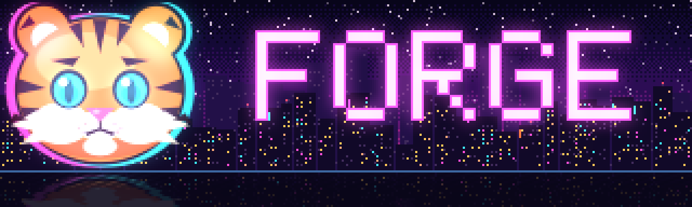

The coding agent that never stops at a rate limit.
Forge reads and edits your files and runs commands from your terminal. Every request can go to any of a dozen providers and keys. When one is busy, the next one picks up the same conversation.
pipx install forgecommandline
A relay, not a single runner.
Providers are tried in order, up to four keys each. A failure rests only that model on that key, and the next provider gets the same conversation. Press play to watch one request go through.
- groq gpt-oss-120bwaiting
- nvidia minimax-m3.1-flashwaiting
- openrouter nemotron-3-ultra:freewaiting
- kilo · llm7 · ovh keylesswaiting
An illustration of the failover rules, using real provider names.
❯ fix the failing test in tests/test_api.py Press play to run the example.
- Per-minute limits rest that model for 60 s; daily limits until UTC midnight. The key keeps serving its other models.
- A provider silent for 30 s is skipped. Empty or junk replies count as failures; cut-off replies are continued.
- If every model is resting, Forge waits for the first one back instead of giving up.
Everything a coding agent should, in your own terminal.
01 Reads, edits, runs
Opens and patches files, searches the project, runs shell commands and background servers, and shows every diff.
02 Smart approvals
Edits in the folder and ordinary commands just run. Deleting, git push, global installs and writes outside the folder ask first.
03 Works with no key
The keyless gateways kilo, llm7 and ovh sit at the end of the chain. Free keys from Groq, NVIDIA, OpenRouter, Cerebras or Gemini make it faster.
04 Skills
Ten built in, a library of thirty, and any Claude Code skills you already have. A skill is one Markdown file.
05 Team mode
forge -t splits a task between models that plan, build and review each other's work.
06 Picks up where you left off
forge -c continues the last conversation in this folder; forge -r jumps to any saved one.
What it looks like.
Taken in Windows Terminal, not mocked up.


/city on adds the pixel city.
Instead of a spinner, a courier pushes a wheelbarrow of parcels along the status line while Forge works.
Install in a minute.
Whichever way you install it, the command is forge.
Install pipx if you don't have it.
python -m pip install --user pipx && python -m pipx ensurepathInstall Forge. pipx keeps it in its own environment.
pipx install forgecommandlineOpen a new terminal in any project folder and run it.
forge
Install with pip (Python 3.10 or newer).
python -m pip install forgecommandlineRun it in any project folder.
forgeUpdate later the same way.
python -m pip install -U forgecommandline
Download
Download for Windowsforge-v0.8.0-windows-x64.zipfrom the latest release. No Python needed.Unzip it and put the folder with
forge.exeon your PATH.Open a new terminal and run it.
forge
Clone the repository.
git clone https://github.com/HSigei/forgeCLI.git && cd forgeCLIInstall it, or run
forge.cmddirectly on Windows.python -m pip install .
First run: forge opens /setup to add a provider key. You can skip it — the keyless gateways work straight away — or paste a key into the chat later; Forge files it under the right provider and redacts it.
The full guide.
Commands, keys, failover settings, skills, team mode and configuration. Same text as the README.
Read the guide
Loading the guide…